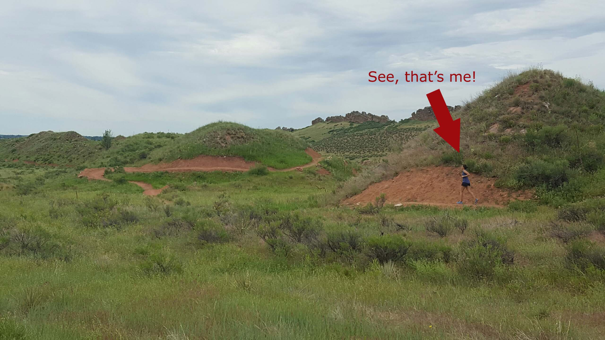
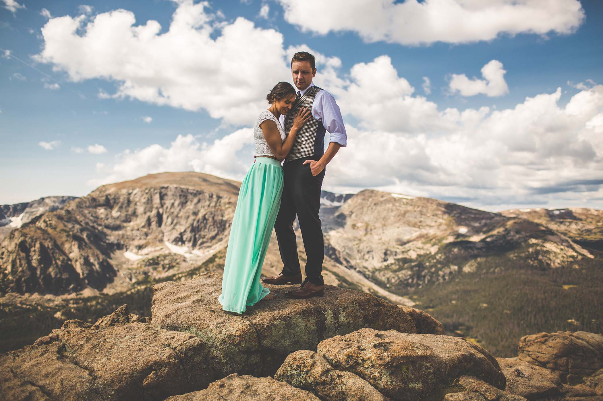
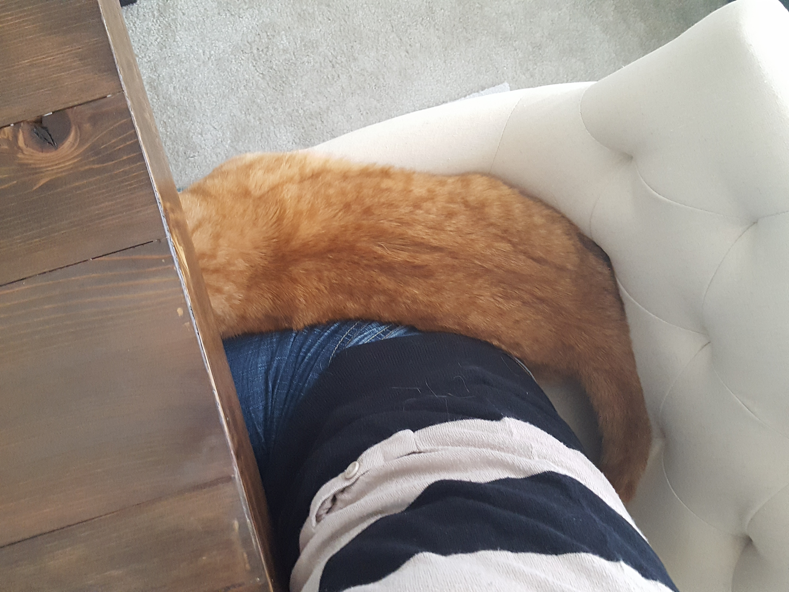

---
layout: default
---
Quick Facts About Me
- Moved from my home state of Washington to Florida when I was 19, then to Colorado 2 years ago
- Used to bake 2,000+ cookies every December for friends, family, and co-workers. Now that I work remote I cut that back to a few hundred
- Driven a Tank...over a car
- Traveled to Germany, France, Austria, Belgium, and Luxembourg
- Ran a 9 mile race in the middle of the night, out in the middle of the woods
- Love road trips, I've been up and down both the east and west coasts
- Love nature, as you can see by the pictures below
Trail running is the only type of running I like, except when it's cold out. This picture was taken at Devils Backbone Trail near Fort Collins, CO. So far this has been one of my favorite trails since moving to Colorado in 2016.

Also in 2016 my husband and I eloped to Rocky Mountain National Park, and I'm still paying for that in jewelry to my mother-in-law (love you Kathy!)

Why yes, I have been to a Wrestlemania
This is my favorite work proximity associate
